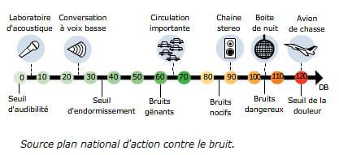
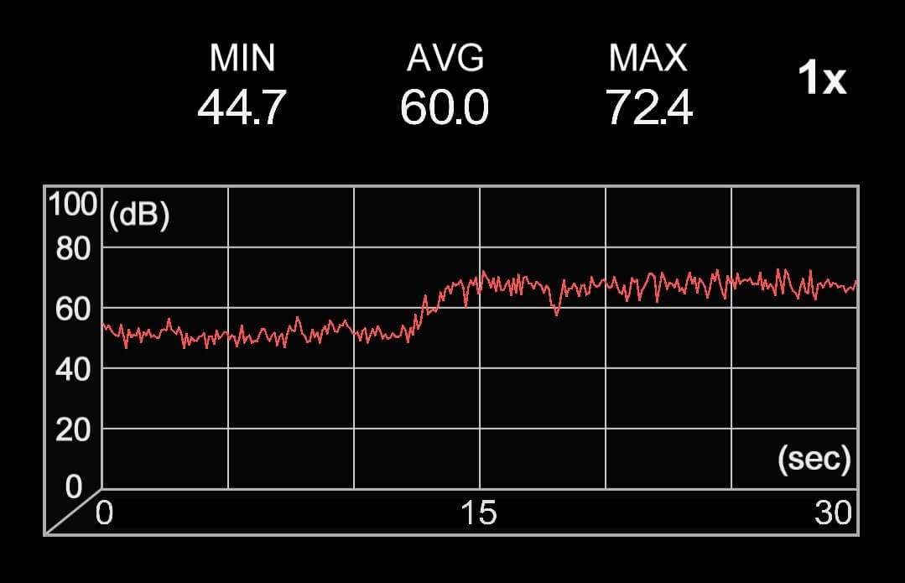
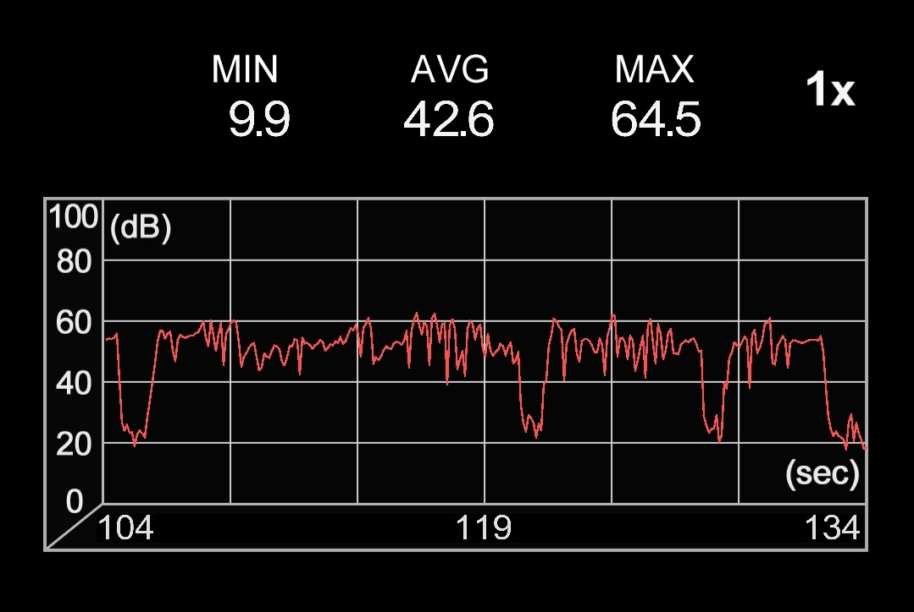

Comme beaucoup de personnes, j'écoute énormément de musiques.
Le matin et l'après-midi, dans les transports publiques, j'ai un casque sur la tête.
Le soir, pareil, chez moi, pour me détendre. Puis, une fois détendu, je joue généralement du violon. S'en suit
parfois de la guitare.
Après quoi, je travaille sur mes projets (blog, sites web, applications mobiles, ...) avec systèmatiquement
de
la musique qui sort de mon Google home ou des enceintes de mon laptop.
Au total, j'écoute environ 6h. de musiques par jour (2h dans le train + 1h30 pour repos + 30min violon + 2h
avancement dans mes projets).
Et encore, c'est uniquement les jours ou je travaille. Autrement on dépasse très largement les
6 heures.
Pour mon cas, c'est avant tout à cause du TDAH que j'écoute autant de musique.
Quoi qu'il en soit, cela fait depuis environ 7 ans que j'ai un casque audio.
Sept années d'écoute autant intensive avec un casque, ça doit formcément avoir un impact négatif sur mes typants
?
Résultat du dernier test auditif professionnel passé (avant-hier) :
Audition parfaite des 2 oreilles. 5/5 pour tous les tests.
Je ne suis pas sûre que les personnes dans le train qui écoutent de la musique tellement
fort dans leur écouteurs, au point qu'on entend ce qu'ils écoutent 2 sièges plus loin, auraient eues le même
résultat.
Contrairement à ce qu'on peut penser, les écouteurs sont bien plus dangereux pour nos typants qu'un casque audio.
Pour la simple et bonne raison qu'il ne réduisent pas ou pas assez le bruit ambient.
Résultat: les usagers montent le son afin de masquer les bruits ambients.
Bien qu'il existe désormais des écouteurs à réduction de bruit passive (p. ex. AirPods), cela reste du pipo par
rapport
aux casques audio, qui eux, en plus d'une technologie noise canceling poussée, possèdent un mousse permettant de
limiter les bruits.
Pour les casque circum-aural (ceux qui englobent l'oreille et ne sont pas simplement posés dessus) c'est encore
mieux.
Oui mais Alex, les casques audios peuvent être plus dangereux parcequ'ils éméttent à un niveau plus élevé bla bla
bla. NON.
Alors non. Voyez les earpod, c'est 103 db maximum. Mon casque, un sony WH-1000 xm3 c'est 104,5 db maximum.
Pour comparaison voilà à quoi ressemblent ces 2 appareils :
Il est possible que les personnes qui portent un casque sont plus sujettes à des pertes auditives.
Mais c'est simplement parceque ces mêmes personnes ont tendance à écouter beaucoup plus de musique.
Dès lors que la musique prend une part importante dans notre vie, investir dans un casque devient intérresant.
Pour aller plus loin, il convient d'en apprendre un peu plus sur les décibels :
Un chuchotement c'est 30 db.
Une discussion à voix haute, 60 db.
Votre tondeuse à gazon, c'est 80 db.
Pour nos tympans, ça devient dangereux à partir de 70 décibels.
Mais en réalité c'est la durée durant laquelles on a été exposé au son qui fait les dégats.
Une moto = 80 à 110 db (vraiment pas bon pour nos oreilles), devient dangereux à partir d'une heure d'exposition
au son.
(Puis, il faut attendre 24 heures pour laisser nos oragnes oriculaires reposer)
Un événement sportif = 94 à 110 db, dangereux en moins d'une heure.
Un casque audio avec volume au max = 96 à 110 db, dangereux en quelque minutes. (Dépend beaucoup du casque / des écouteurs en question)
Un spectacle d'un groupe de Rock = 95 à 115 db, dangereux en quelque minutes.
Sirène de police, pompier, etc. = 110 à 129 db, dangereux en moins d'une minute.
(Bouchez-vous les oreilles avec vos doigts quand ils passent tout près, même si bien souvent c'est un reflex).
Feux d'artifice = 140 à 160 db. Si ils explosent très haut dans le ciel, pas trop de soucis. (Ça reste très
bruyant)
Si par malheur un des feux explose près de vous, vous pouvez devenir sourd sur le coup.
J'ai voulu allez un peu plus loin que ça et ai téléchargé une application de mesure de niveau de bruit sur mon
smartphone.
Voilà ce que ça à donnée :
| Contexte : | Dans le train avant et au moment d'entrer dans un tunnel | En jouant du violon (Ave Maria - Schubert) |
|---|---|---|
| Illustration : |  |  |
| Remarque : | Plus fort que je ne le pensais. Les sons graves sembles bien souvent moins forts que ce qu'ils ne sont réelement. |
Moins fort que je ne le pensais, les sons très aigus paraissent plus fort que ce qu'ils ne sont réelement. |
Si on écoute souvent de la musique avec des écouteurs on préferera investir dans un casque
audio moyen à haut de gamme. Ces casques allient une grande qualité audio avec une réduction
de bruit très agréable qui saura proteger nos tympans convenablement.
Il n'y a pas meilleur moyen pour protéger ses tympants que de savoir quand notre environnement
devient dangereusement bruyant, installer une applicaiton gratuite de mesure de décibéls est un
moyen mostrueusement efficace afin d'améliorer ses connaisances dans ce domaine.